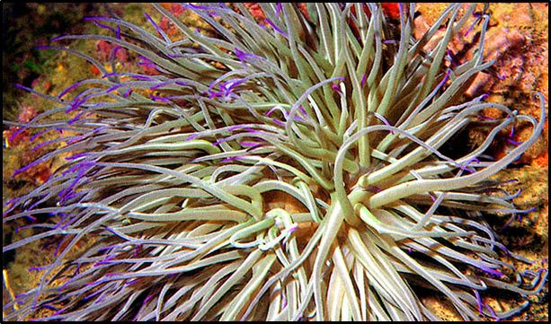
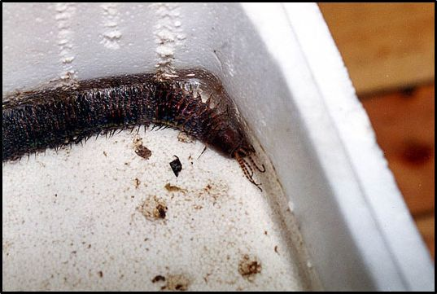
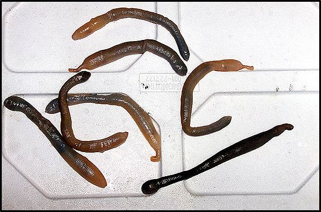
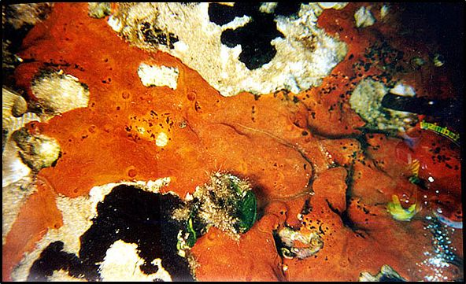
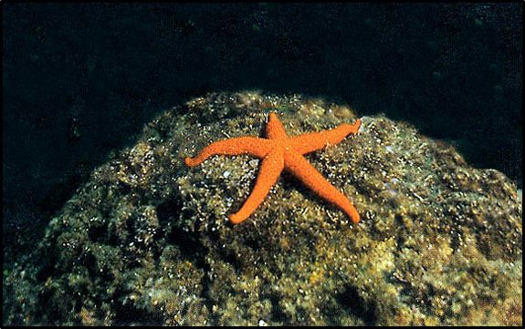

Η πανίδα της θάλασσας περιλαμβάνει μεγάλη ποικιλία ειδών. Τα είδη αυτά, έχουν αναπτύξει τις κατάλληλες προσαρμογές που μερικές φορές είναι και αρκετά εντυπωσιακές, ανάλογα με το περιβάλλον στο οποίο ζουν, (επιφανειακά ή βαθιά νερά, βραχώδης ή αμμώδης πυθμένας).
Οι θαλάσσιοι ζωϊκοί οργανισμοί διακρίνονται στους πελαγικούς και τους βενθικούς:
Α. Πελαγικοί ζωϊκοί οργανισμοί:
Β. Βενθικοί ζωϊκοί οργανισμοί (Ζωοβένθος):



